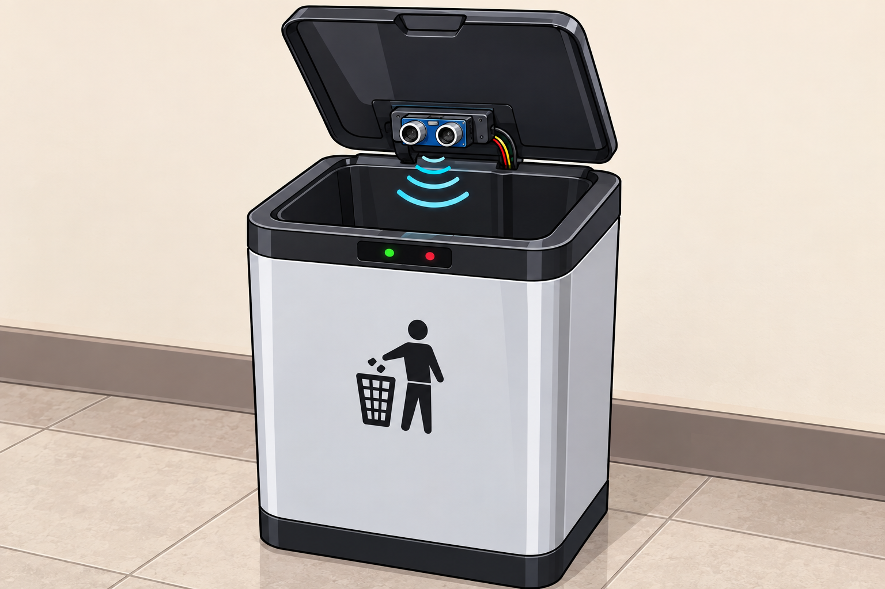

Smart Trash Bin
A full IoT system: Arduino sensors measure how full a bin is, a Raspberry Pi sends the data to a Flask API, and a live dashboard shows every bin on a campus map with alerts.

Why I built it
Campus waste collection usually follows a fixed schedule, so crews visit bins that are half empty while others overflow between visits. I built the Smart Trash Bin system to give the people responsible for the bins a live picture of every bin on campus: how full it is, where it is, whether it is still reporting, and when it needs emptying.
It is a complete hardware-to-browser project: sensors on a bin, a small computer that reads them, a web API that stores the data, and a dashboard that turns it into decisions. The portfolio version of the dashboard is a live demo that simulates the sensors in your browser; the real system runs on the hardware described below.
What it does
- Two sensors per bin: an ultrasonic sensor measures how high the trash is, and a load cell measures its weight
- Sensor fusion that combines both readings into one fill percentage
- Live campus map (Leaflet and OpenStreetMap) with colour-coded bins
- Status for every bin: Empty, Half (40%+), Full (80%+) or Offline when it stops reporting for 10 seconds
- A full-bin alert with a sound that repeats every minute until someone acknowledges it
- PIN-protected add and delete with undo, plus one-tap walking directions to any bin
How it works
1. The Arduino reads the sensors. An ultrasonic sensor sends a pulse and times the echo to calculate the distance to the trash. A load cell with an HX711 amplifier measures weight. Ultrasonic readings can be noisy, so the Arduino takes three readings and keeps the median, and it reports -1 when a reading is invalid. It prints one line over serial every 200 ms in the form distance,weight.
int readDistanceFiltered() {
int d1 = readDistanceOnce(); delay(10);
int d2 = readDistanceOnce(); delay(10);
int d3 = readDistanceOnce();
if (d1 < 0 && d2 < 0 && d3 < 0) return -1; // all invalid
// ... replace invalid values, then:
return median3(d1, d2, d3);
}2. The Raspberry Pi turns readings into a fill level. A Python script reads the serial line, converts each sensor to a percentage using calibration values (55 cm is empty, 8 cm is full, 0 to 10 kg for weight), smooths each with an exponential moving average, and fuses the two.
def fuse(height_pct, weight_pct):
base = min(height_pct, weight_pct)
# if either sensor says "full", don't under-report
if height_pct >= 85 or weight_pct >= 85:
return max(base, 0.70 * max(height_pct, weight_pct))
# if both say "nearly empty", keep it low
if height_pct <= 10 and weight_pct <= 10:
return min(height_pct, weight_pct)
return baseFusion matters because each sensor can be wrong on its own: an ultrasonic sensor can read a pile that is tall but light, and a load cell can read a heavy item at the bottom of an otherwise empty bin. Taking the lower value avoids false alarms, and the strong-full rule stops that from hiding a bin that is really full.
3. A Flask API stores and serves the data. The Pi sends the fill level with an HTTP PUT every two seconds. The Flask server saves each bin to a JSON file, rejects duplicate IDs, and decides whether a bin is online or offline by checking how long ago it last reported.
OFFLINE_AFTER_SECONDS = 10
def compute_status(last_seen_iso):
last = datetime.fromisoformat(last_seen_iso.replace("Z", "+00:00"))
age = datetime.now(timezone.utc) - last
return "offline" if age.total_seconds() > OFFLINE_AFTER_SECONDS else "online"4. The dashboard turns data into decisions. The browser refreshes every second, colours each bin by status, and shows the full-bin alert card. To avoid alert fatigue, the sound plays once per minute while a bin stays full, and Acknowledge silences it for two minutes. Offline bins are excluded from alerts, because a bin that is not reporting cannot be trusted either way.
About the live demo. GitHub Pages can only host static files, so it cannot run the Flask server or talk to the hardware. The demo page uses the same calibration values, smoothing and fusion rule, but generates the sensor readings in your browser. Use the simulation controls to add trash, empty a bin or disconnect a sensor.
Screenshots


Technical lessons
- Raw sensor data is never clean. The median-of-three filter, the invalid-reading check and the EMA smoothing each removed a different kind of noise.
- Combining two imperfect sensors beats trusting one. The fusion rules came from thinking about how each sensor fails in the real world.
- Decide what silence means. A bin that stops reporting should show as Offline, not as its last value. That is why the server computes status from the time of the last reading.
- Design alerts for people. Repeating once a minute, with a timed acknowledge, keeps the warning noticeable without becoming noise.
- Separate the layers. Sensors, Pi script, API and dashboard communicate through a simple CSV line and a small JSON API, so each one could be tested and changed on its own.
What I would improve next
- Replace the JSON file with a real database and keep reading history, so the dashboard can show fill-rate trends and predict when a bin will be full
- Add real authentication with accounts and roles; the demo's PIN check lives in the browser and is not real security
- Suggest an efficient collection route across only the bins that need emptying
- Move from a hard-coded server address to a secure hosted API with HTTPS